Biomedical Research Hub Documentation
1. The Biomedical Research Hub
The Biomedical Research Hub (BRH) is a cloud-based and multifunctional web interface that provides a secure environment for discovery and analysis of scientific results and data. It is designed to serve users with a variety of objectives, backgrounds, and specialties.
The BRH represents a dynamic Data Ecosystem that aggregates and hosts metadata from multiple resources to make data discovery and access easy for users.
The platform provides a way to search and query over study metadata and diverse data types, generated by different projects and organizations and stored across multiple secure repositories.
The BRH also offers a secure and cost-effective cloud-computing environment for data analysis, empowering collaborative research and development of new analytical tools. New workflows and results of analyses can be shared with the community.
The BRH is powered by the open-source software “Gen3”.

Gen3 was created by and is actively developed at the University of Chicago’s Center for Translational Data Science (CTDS) with the aim of creating interoperable cloud-based data resources for the scientific research community.
2. Types of shared Data
The BRH provides secure access to study metadata from multiple resources (Data Commons) and will be the driving engine for new discovery. The types of data represented are diverse and include scientific research across multiple disciplines.
The BRH aims to make data more accessible by following the "FAIR" principles:
Findable
- Researchers are provided an intuitive interface to search over metadata for all studies and related datasets.
- Each study and dataset will be assigned a unique, persistent identifier.
Accessible
- Authenticated users can request and receive access to controlled-access data by data providers.
- Metadata can be accessed via an open API.
Interoperable
- Data can be easily exported to various workspaces for analysis using a variety of software tools.
Reusable
- Data can be easily reused to facilitate reproducibility of results, development and sharing of new tools, and collaboration between investigators.
3. Data Management and Repositories
The BRH securely exposes data stored on multiple FAIR repositories and Data Commons, i.e. data libraries or archives, to provide an easy way to connect different repositories on one single location.
FAIR data repositories are traditionally a part of a larger institution established for research, data archiving, and, to serve data users of that organization.
Currently, the BRH shares data from the following resources/Data Commons:
- BioData Catalyst
- Proteomic Data Commons
- Genomic Data Commons
- Cancer Imaging Data Commons
- Kids First
- AnVIL
- NIAID ClinicalData
- MIDRC
- IBD Commons
- Justice Community Opioid Innovation Network (JCOIN)
More Commons will be added in the future.
Studies from different Data Resources/Data Commons can be filtered and selected on the Discovery Page in the Study Characteristics section (top panel):
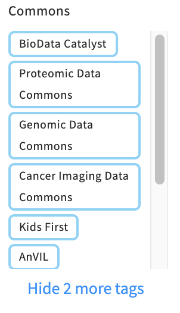4. How to get started
a) BRH Overview
Click on an icon to jump to the section
b) Login Page
You will not need to log in in order to:
- Browse the study metadata on the Discovery Page
You will need to log in and obtain authorization (access) in order to
- access studies with controlled data
- perform analyses in workspaces
- download data files and file manifests
- run interactive tutorial notebooks in workspaces
Start by visiting the login page (https://brh.data-commons.org/login).
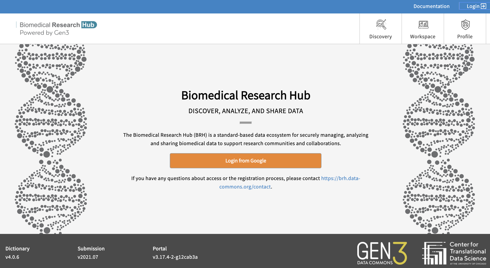- Login from Google: You may login using any Google account credentials, or a G-suite enabled institutional email. This option may or may not be available depending on the institution or organization the user is associated with. Users should contact the IT support to verify if this option is available. For staff, students, and faculty of the University of Chicago, more information can be found here.
- Login via NIH RAS/eRA Commons/dbGaP: You will need an eRA Commons account as well as access permissions through the Database of Genotypes and Phenotypes (dbGaP). If you are a researcher, log in by selecting NIH Login and using your eRA Commons account.
After successfully logging in, your username will appear in the upper right-hand corner of the page.
c) How to check and request Access
Users can find out to which projects they have access to by navigating to the Discovery Page and by selecting “Data Availability" - "Available" - ”OK” as shown below.
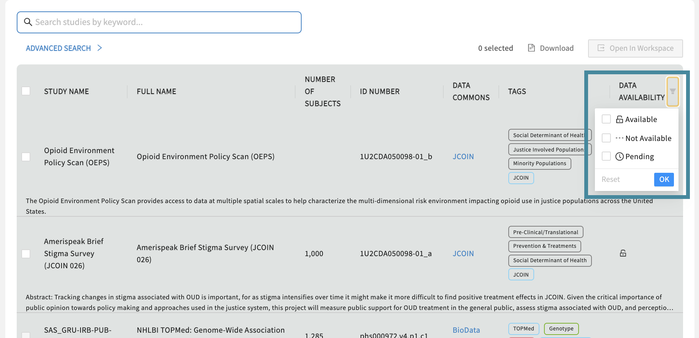Access to individual Studies
You can check access by clicking on a study in the Discovery Page, as shown below:
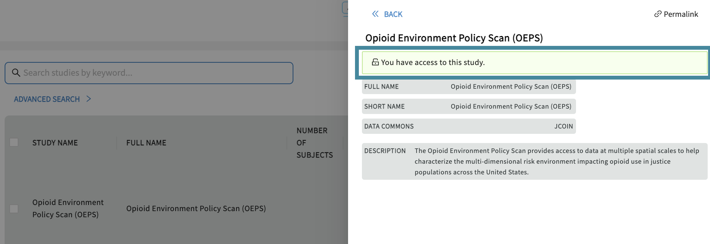If you have access, a green box will show “You have access to this study”.

Linking Access to FAIR enabled Repositories
BRH securely exposes data stored on multiple FAIR repositories and Data Commons.
Users need to link their account to currently all FAIR repositories in order to:
- run Jupyter Notebooks that utilize data stored on various FAIR repositories.
- export data that is stored on FAIR repositories from the Discovery Page to the Workspaces.
- download data that is stored on FAIR repositories from the Discovery Page.
Access needs to be renewed after 30 days, as indicated after "Status: expires in [..] days".
d) Discovery Page
The Discovery Page provides users a venue to search and find studies and datasets displayed on the Biomedical Research Hub. Users can browse through the publicly accessible study-level metadata without requiring authorization.
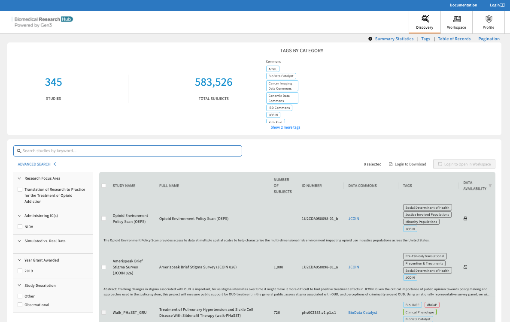Use text-based search, faceted search, and tags to rapidly and efficiently find relevant studies, discover new datasets across multiple resources, and easily export selected data files to the analysis workspace.
Search Features
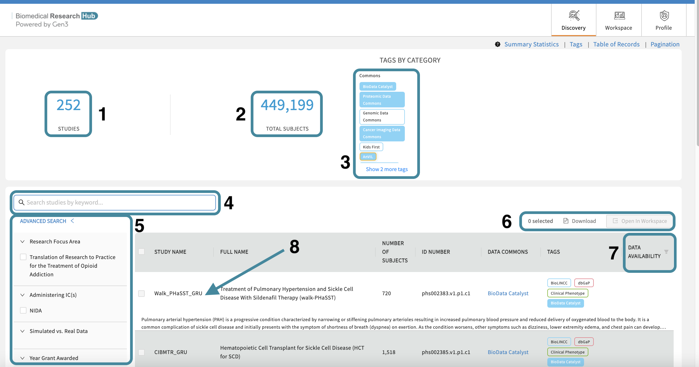- The total number of studies. Shows the amount of studies the BRH is currently displaying.
- The total number of subjects. Shows the amount of subjects the BRH is currently displaying.
- Data Resources/Data Commons Tags. Click on a tag to filter for a Data Resource/Data Commons. Selecting multiple tags work in an "OR" logic.
- Free Text Search. Finding studies is made easy using keywords in the free text-based search bar or using tags. The free-text search bar can be used to search for study name, ID number, Data Commons, or any keyword that is mentioned in the metadata of the study.
- Advanced Search. Narrow down your search using checkbox selections in Advanced Search.
- Export Options. Login first to leverage the export options. Select one or multiple studies and download a file manifest or export the data files to a secure cloud environment "Workspaces" to start your custom data analysis in Python, R, or STATA.
- Data Availability. Filter on available, pending, and not-yet-available datasets. Read further here.
- Studies. This table feature presents all current studies on BRH. Click on any study to show useful information about the study (metadata). Read further here.
Find available Study-level Metadata
Finding available study-level metadata on BRH is made easy by clicking on a study.
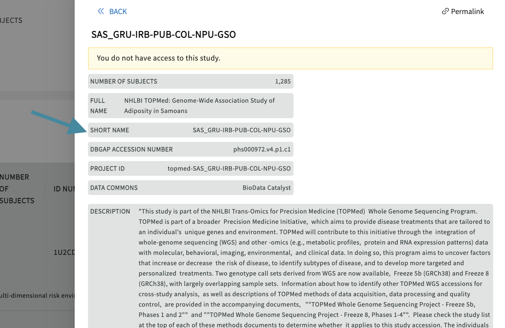Find accessible Datasets
Users can select and filter studies from multiple resources and conduct analyses on the selected datasets in a workspace. Users can find search only available data they have access to by selecting the data access button in the top right corner of the study page and selecting “Data Availability" - "Available" as shown below. The Discovery Page will automatically update the list of studies that have available datasets.
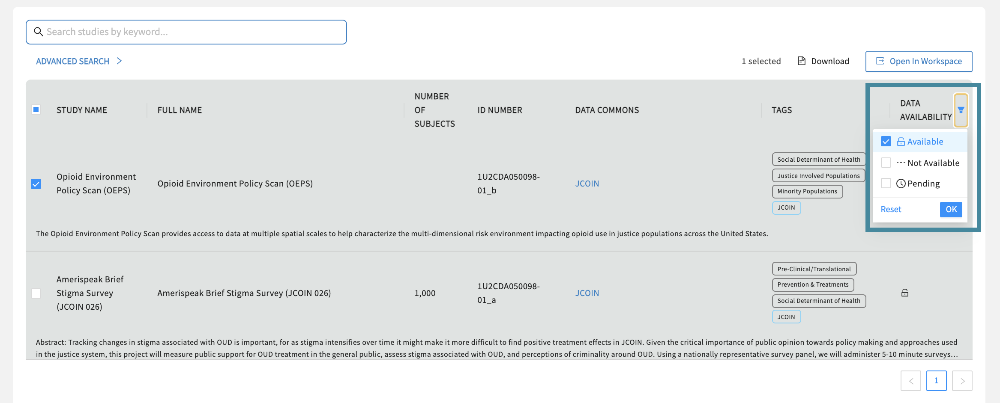Data Availability Options
Different options for Data Availability exist and will be explained below.

- Available: This option will display only studies with datasets users have access to and entails all open-access studies. Studies can be selected and exported to a workspace or downloaded as a manifest by clicking on the associated checkbox on the left-hand side of the study entry and selecting one of the options in the top right.
- Not available: This option will filter out all studies that will only have metadata but no datasets available. The checkbox next to the study will be greyed out and non-clickable.
-
Pending: This option will display studies located on any data resource or repository, for which attached datasets will be added in the near future. The checkbox next to the
study will be greyed out and non-clickable.
e) Workspaces
BRH workspaces are secure data analysis environments in the cloud that can access data from one or more data resources. By default, Workspaces include Jupyter notebooks, Python and RStudio, but can be configured to host virtually any application, including analysis workflows, data processing pipelines, or data visualization apps.
New to Jupyter? Learn more about the popular tool for data scientists on Jupyter.org (disclaimer: CTDS is not responsible for the content).
Users need to register for workspace accounts to use the workspaces, as described below.
Register for Workspaces - STRIDES
Users need to request for a workspace account to work in the workspaces of the BRH, see below for a guideline.
The workspace account is handled with the help of NIH STRIDES (NIH Science and Technology Research Infrastructure for Discovery, Experimentation, and Sustainability). The NIH STRIDES Initiative allows NIH to explore the use of cloud environments to streamline NIH data use by partnering with commercial providers.
By leveraging the STRIDES Initiative, NIH and NIH-funded institutions can begin to create a robust, interconnected ecosystem that breaks down silos related to generating, analyzing, and sharing research data.
NIH-funded researchers with an active NIH award may take advantage of the STRIDES Initiative for their NIH-funded research projects. Eligible researchers include NIH intramural researchers and awardees of NIH contracts, other transaction agreements, grants, cooperative agreements, and other agreements. More information on NIH STRIDES and how to gain access can be found here.
Guideline how to register for Workspace Access
-
Start requesting a workspace account by visiting https://brh-portal.org/ and logging in.
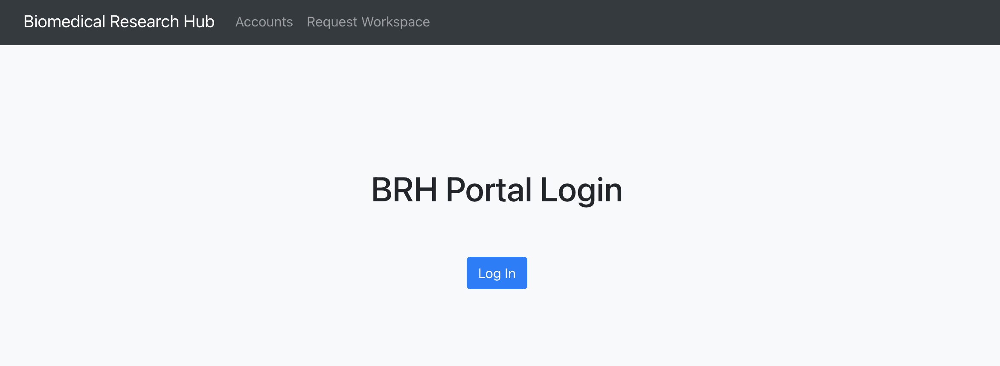Log in on the BRH Admin Portal.
-
After authorization, users will see the landing page, which displays current workspace accounts and credits once workspaces access and credits/grants have been approved.
To start the process of requesting a new workspace account, users need to select "Request New Workspace" on the landing page.
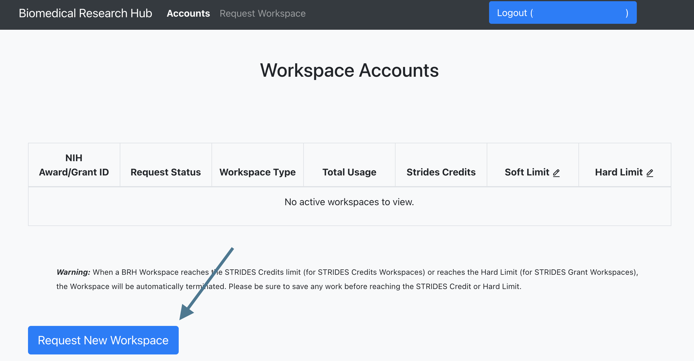
-
Choose one of the two options a) STRIDES Grant/Award Funded or b) STRIDES Credits to request a workspace account.
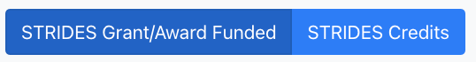For information on the NIH STRIDES options, please refer to the official page.
-
The STRIDES Grant/Award Funded form can be selected if researchers have received NIH funding (e.g. a grant, contract, cooperative agreement, or other transaction agreement)
and intend to use these funds for the BRH account. With this option, the researchers' organization will be responsible for payment.

Request form for "STRIDES Grant/Award Funded".
-
The STRIDES Credits form can be selected if users are requesting credits from the NIH STRIDES Initiative for the BRH account. With this option, once the request is approved,
a new account with a spending limit of $XXX will be provisioned for usage.

Request form for "STRIDES Credits".
- Submit the request. Note that the process of granting access for a workspace account can take up to two weeks and users will be notified. Following the approval, users will see the current workspace accounts and credits on the landing page.
Guideline to get started in Workspaces
Once users have access to workspaces, find below a guide of how to get started with analysis work in workspaces.
- Users need to log in via https://brh.data-commons.org/login to access workspaces.
-
After navigating to https://brh.data-commons.org/workspace, users will discover a list of pre-configured virtual machine (VM) images, as shown below.
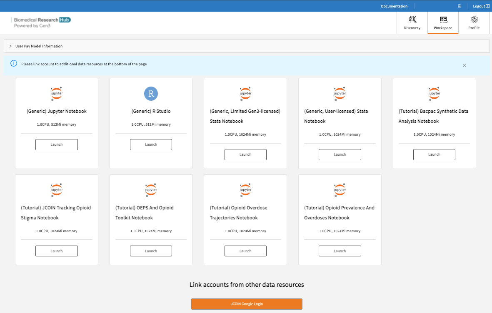Available workspaces on BRH.
- (Generic) Jupyter Notebook with R kernel: Choose this VM if you are familiar with setting up Python- or R-based Notebooks, or if you just exported one or multiple studies from the Discovery Page and want to start your custom analysis.
- (Generic, User-licensed) Stata Notebook: Choose this VM if you are familiar with STATA-based data analysis. This notebook requires a STATA license.
- Tutorial Notebooks: Explore our Jupyter Notebook tutorials written in Python or RStudio, which pull data from various sources of the Biomedical Research Hub to leverage statistical programs and data analysis tools.
-
Click “Launch” on any of the above workspace flavors to spin up a copy of that VM. Note: Launching the VM may take several minutes.
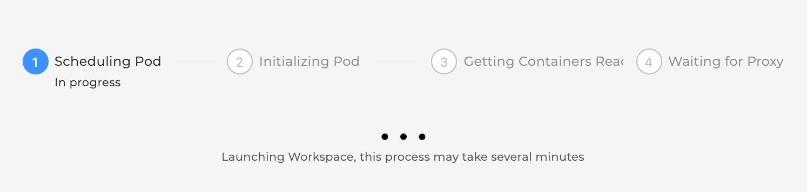The status of launching the workspace is displayed after clicking on “Launch”.
-
After launching, the home folders are displayed, one of which is the user's persistent drive ("pd").
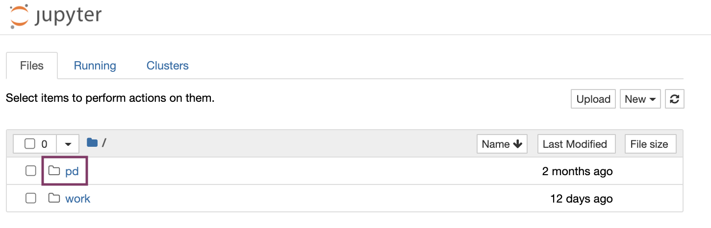The /pd directory is a user’s persistent drive.
-
Select the /pd folder. Only files saved in the /pd directory will remain available after termination of a workspace session.

New files or licenses should be saved in the the /pd directory if users need to access them after restarting the workspaces.
- Attention: Any personal files in the folder “data” will be lost. Personal files in the directory /pd will persist.
- Do not save files in the "data" and “data/brh.data-commons.org” folders.
- The folder “brh.data-commons.org” in the “data” folder will host the data files you have exported from the Discovery Page.
-
Start a new notebook by clicking “New” in the top right corner and choose between Python 3 or R Studio as the base programmatic language.
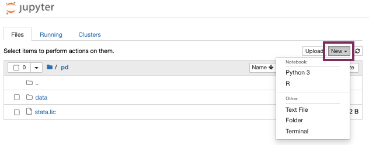Start a new notebook under “New”.
-
Experiment away! Code blocks are entered in cells, which can be executed individually or all at once. Code documentation and comments can also be entered in cells, and the
cell type can be set to support Markdown.
Results, including plots, tables, and graphics, can be generated in the workspace and downloaded as files.
-
Do not forget to terminate your workspace once your work is finished to be mindful of the cost-intensive computational effort.
Note, that Workspaces automatically
shut down after 90 minutes of idle
time.
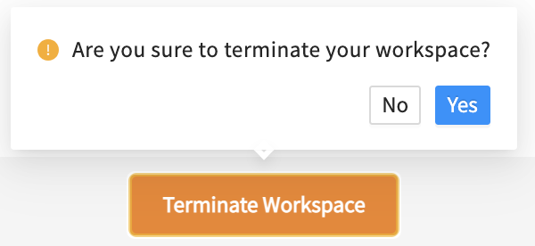Do not forget to terminate your workspace once your work is finished. Unterminated workspaces continue to accrue computational costs.
Further reading: read more about how to download data files into the Workspaces here.
Upload, save, and download Files/Notebooks
Users can upload data files or Notebooks from the local machine to the home directory by clicking on “Upload” and access them in the Notebook (see below).

Then run in the cells, for example:
import os
import pandas as pd
os.chdir('/data')
demo_df = pd.read_csv('/this_is_a_demo.txt', sep='\t')
demo_df.head()
Users can save the notebook by clicking "File" - "Save as", as shown below.
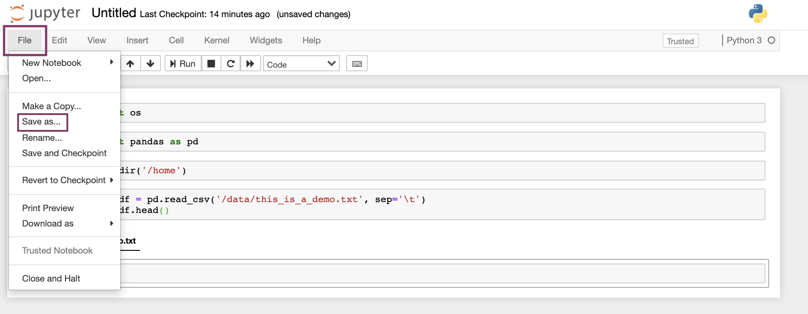Users can download notebooks by clicking "File" - "Download as", as shown below.

Environments, Languages, and Tools
The following environments are available in the workspaces:
-
Jupyter

-
RStudio

The following programmatic languages are available in Jupyter Notebooks:
The following tools are available in Jupyter Notebooks:
- GitHub (read GitHub documentation)
Python 3 and RStudio in Jupyter
Both Python 3 and RStudio are available in Jupyter Notebooks.
Users can expect to be able to use typical Python or RStudio packages, such as PyPI or CRAN. For Python and RStudio, users can start a new notebook under
"New", as shown below.
STATA in Jupyter
STATA is available as language in Jupyter notebooks (either in Python or R kernels), but requires a license and a specific workspace.
Users need to first choose the following workspace "(Generic, User-licensed) Stata Notebook" in order to be able to use STATA:
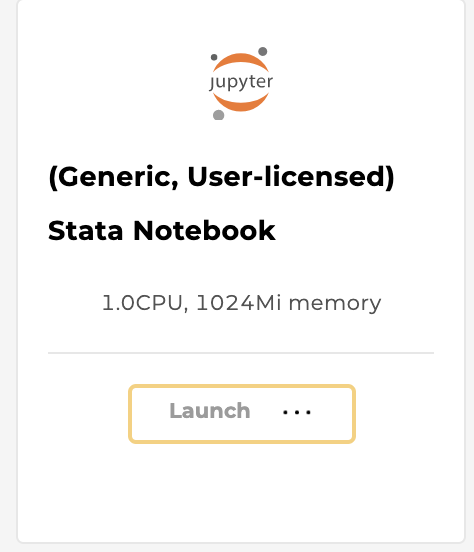
Users need to upload a license stata.lic to the /pd folder by selecting "Upload" (top right).
Note, that uploading the license can also be achieved programmatically by opening a new terminal window under "New" - "Terminal", finding the directory /pd by typing:
cd pd
. Then, create a file using vim:
vim stata.lic
. This will open the file in the terminal. Users can copy the license, then hit : +
wq.
Then, users need to start a new notebook under "New" (choose either R or Python). Run the following code in the first cell:
import stata_setup
stata_setup.config("/usr/local/stata17", "mp")
This will return the following:
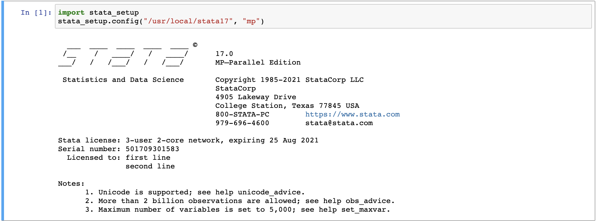 Users can then begin using the notebook by typing in known STATA commands, for example
%% stata . describe
.
Automatic Workspace Shutdown
Workspaces automatically shut down after 90 minutes of idle time and a pop-up window will remind users before the workspace shuts down.

f) Profile Page
On the profile page users will find information regarding their access to projects, access to Gen3-specific tools (e.g. access to the /workspace), and the function to create API keys for credential downloads. API keys are necessary for the download of files using the Gen3-client; for more information see chapter 5.
5. Downloading Data Files
Users can download data files associated with a study by leveraging the CTDS-owned python software development kit (SDK) and the tool “Gen3-client” if the file size exceeds 250 MB.
Note, that accessing data files requires linked access to all FAIR enabled repositories, as described here.
a) Download Data Files using the Gen3-client
In order to download data files above 250 MB, users will need to utilize the Gen3-client command line tool developed by the University of Chicago’s Center for Translational Data Science.
Find below a guide to download data files using the Gen3-client:
-
Log in to BRH on https://brh.data-commons.org/login.
- Find and select one or multiple studies of interest on the Discovery Page. For multiple studies, select "Data Availability" in the top right corner, click “Available”, and choose multiple studies.
-
Select a study and click on the button “Download".
-
Create and download an API key from your Profile Page. Note where you save the API key on your local machine.
-
Download and configure the Gen3-client
a. Follow the download instructions of the Gen3-client here. The client can be downloaded here.
b. In your terminal, configure your profile using the following command:
gen3-client configure --profile=<profile_name> --cred=<credentials.json> --apiendpoint=<api_endpoint_url>
#Mac/Linux:
gen3-client configure --profile=demo
--cred=~/Downloads/demo-credentials.json --apiendpoint=https://brh.data-commons.org/
#Windows:
gen3-client configure --profile=demo
--cred=C:\Users\demo\Downloads\demo-credentials.json --apiendpoint=https://brh.data-commons.org/
#Output:
10:08:20 Profile 'demo' has been configured successfully.
If successfully executed, a configuration file will be stored under the directory the user specified under “cred”. For troubleshooting, refer to the instructions found here.
c. Download files by using the following command, which references the manifest file name and its location:
gen3-client download-multiple --profile=<profile_name> --manifest=<manifest_file> --download-path=<path_for_files>
gen3-client download-multiple --profile=demo --manifest=manifest.json --download-path=downloads
#Output:
2021/06/03 16:48:46 Reading manifest...
200 B / 200 B [===================] 100.00% 0s
WARNING: flag "rename" was set to false in "original" mode, duplicated files under "downloads/" will be overwritten
Proceed? [y/n]: y
2021/06/03 16:48:47 Total number of GUIDs: 1
2021/06/03 16:48:47 Preparing file info for each file, please wait...
1 / 1 [============================================] 100.00% 0s
2021/06/03 16:48:47 File info prepared successfully
arcos_all_washpost.tsv.gz 6.41 GiB / 6.41 GiB [=======================================================] 100.00% 0s
b) Download Data Files in Workspaces using the Python SDK
Users can download data files to the workspaces by leveraging the CTDS-owned python software development kit (SDK). Follow instructions below.
-
Log in to the Data Commons on https://brh.data-commons.org/login.
-
Find and select one or multiple studies of interest on the Discovery Page. Select "Data Availability" in the top right corner and click on “Available” to see
all available studies.
-
Select a study and click on "Open in Workspace".
-
Select a workspace VM and click "Launch". Choose the "(Generic) Jupyter Notebook with R kernel" if you are familiar with setting up Python- or R-based Notebooks, or if you just exported one or multiple studies from the Discovery Page and want to start
your custom analysis. Choose a VM with the name of the Notebook if you selected the studies relevant to a specific Notebook and want to work on the Notebook in interactive mode.
-
Find all files under /data/brh.data-commons.org/ with the ending "PLACEHOLDER". These files can be directly downloaded either in the terminal or in a notebook cell.
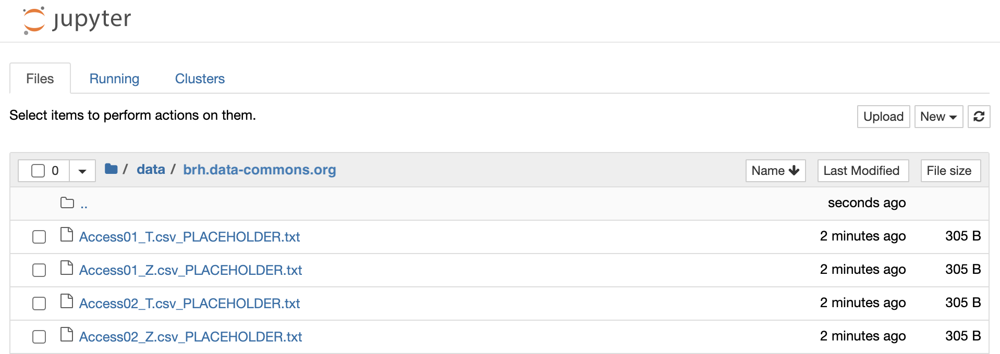
-
Click on one file and copy the command and GUID.

-
Open a new terminal under "New".
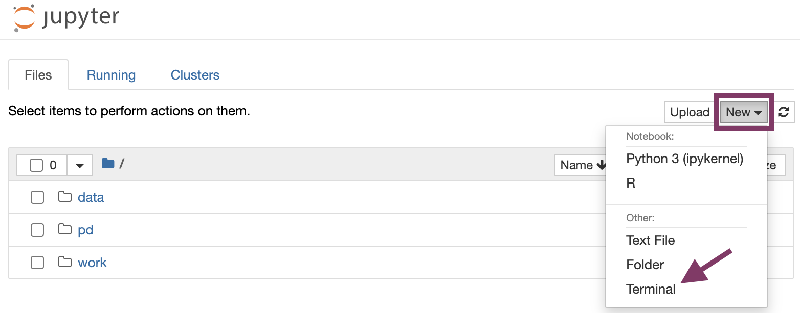
-
- Type in the following command to download the file to the terminal:
gen3 pull_object "guid"
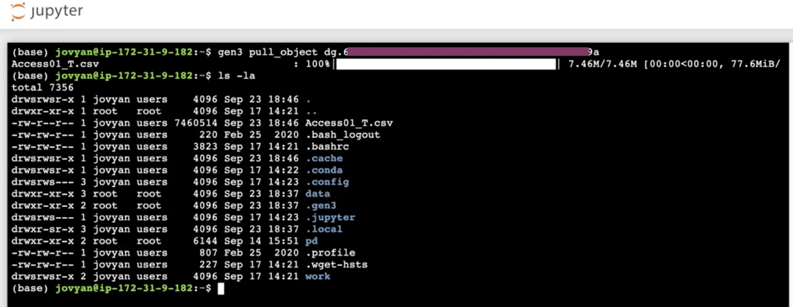
-
If you are working in a notebook, type in the following command into a code cell to download the file:
!gen3 pull_object "guid"
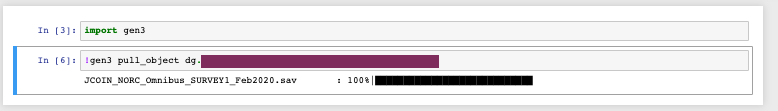
-
If you use the R kernel, change the command into
system("gen3 pull_object 'guid'")
-
Note, that you can also use the
manifest.json to download in batches, see below:
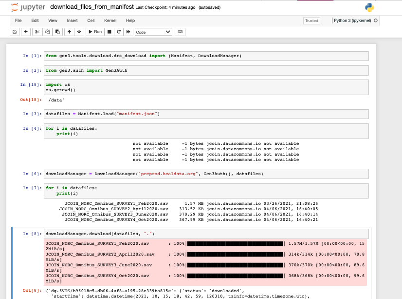
Download files in batches with a file manifest using the commands shown above.
- Type in the following command to download the file to the terminal:
-
The file(s) should be downloaded and is ready to be worked with in your Notebook.
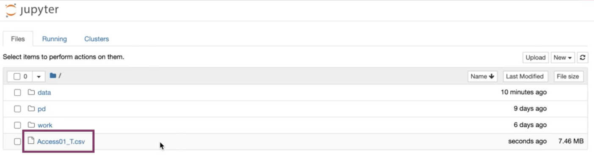Downloaded files can be found in your home directory.
Contact
Need help? Please contact our help desk.
Powered by